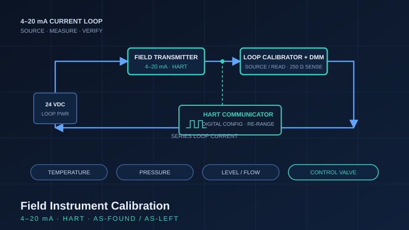

Project Case Study · Winter 2026
Field Instrument Calibration & Loop Verification
Bench and lab calibration of live 4–20 mA instruments across the full span of field instrumentation. The work covers all four instrument categories a plant depends on: temperature, pressure, level or flow, and a final control element. Each device was calibrated against traceable test equipment and documented with as-found and as-left records to standard industrial practice, and HART-capable transmitters were configured and re-ranged digitally over the loop.

Scope
The project treats calibration as it is handled on the plant floor: verify what the instrument currently reads, correct it if it is out of tolerance, and record both states. Three of the four devices are measurement instruments that convert a process variable into a 4–20 mA signal. The fourth is a final control element, verified by its response to the signal rather than by measurement. Every result is captured as-found and as-left so the record shows the condition on arrival and the condition after adjustment.
HART configuration over the loop
Where instruments were HART-capable, configuration and re-ranging were carried out digitally over the same 4–20 mA loop with a HART communicator, rather than by adjusting zero and span in hardware. This included reading the device tag and diagnostics, setting the lower and upper range values, and confirming the analog output tracked the reconfigured range. Digital re-ranging over the live loop is standard on modern instrumentation and is the practical difference between bench-only calibration and working the way a plant actually maintains its devices.
Test equipment
All calibrations used a loop calibrator to source and measure the 4–20 mA signal, a digital multimeter for independent current and voltage verification, and a HART communicator for digital configuration of HART-capable devices.
Temperature transmitter
A temperature transmitter converting a sensor input into a calibrated 4–20 mA output.
- Instrument type: temperature transmitter. [TODO: confirm sensor type (RTD or thermocouple) and model]
- Measurement range: [TODO: insert calibrated range, e.g. 0 to 150 °C]
- Output signal: 4–20 mA, 2-wire; HART-capable.
- Test equipment: loop calibrator, digital multimeter, HART communicator.
- Result: [TODO: insert as-found and as-left readings from the calibration sheet]
Pressure transmitter
A pressure transmitter calibrated across its span and checked at multiple points.
- Instrument type: pressure transmitter. [TODO: confirm type (gauge, differential, absolute) and model]
- Measurement range: [TODO: insert calibrated range, e.g. 0 to 100 psi]
- Output signal: 4–20 mA, 2-wire; HART-capable.
- Test equipment: loop calibrator, digital multimeter, HART communicator.
- Result: [TODO: insert as-found and as-left readings from the calibration sheet]
Level / flow instrument
A level or flow instrument, calibrated the same way as the other measurement transmitters.
- Instrument type: [TODO: level or flow type (e.g. differential-pressure, radar, magnetic) and model]
- Measurement range: [TODO: insert calibrated range]
- Output signal: 4–20 mA. [TODO: note whether HART-capable]
- Test equipment: loop calibrator, digital multimeter, HART communicator.
- Result: [TODO: insert as-found and as-left readings from the calibration sheet]
Control valve with positioner
The final control element is verified differently from the transmitters. Instead of calibrating a measurement, the valve is checked for signal-to-position response: the positioner must drive the valve to the correct opening for a given 4–20 mA command.
- Instrument type: control valve with a positioner (final control element). [TODO: valve and positioner model]
- Input signal: 4–20 mA to the positioner.
- Verification: valve stem position checked against the commanded signal at 0, 25, 50, 75, and 100 percent, confirming the positioner opened the valve to the correct position across the range.
- Test equipment: loop calibrator to source the signal, digital multimeter for verification, HART communicator where the positioner was HART-capable.
- Result: [TODO: insert as-found and as-left position vs signal readings]
What this shows
End-to-end competence with the field instrumentation a plant runs on: calibrating the three primary measurement types, verifying a final control element, working the 4–20 mA loop with a calibrator and multimeter, configuring HART devices digitally over the loop, and recording every result as-found and as-left to a standard that holds up in a calibration file.